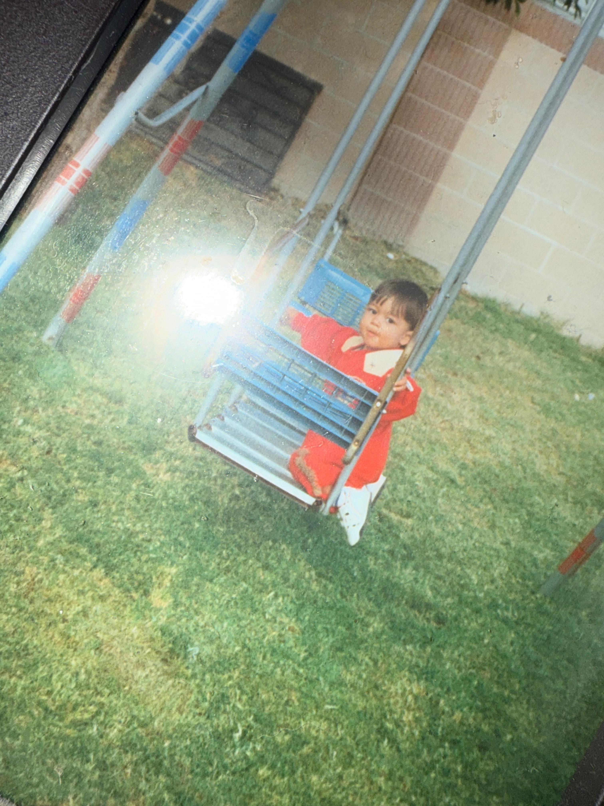
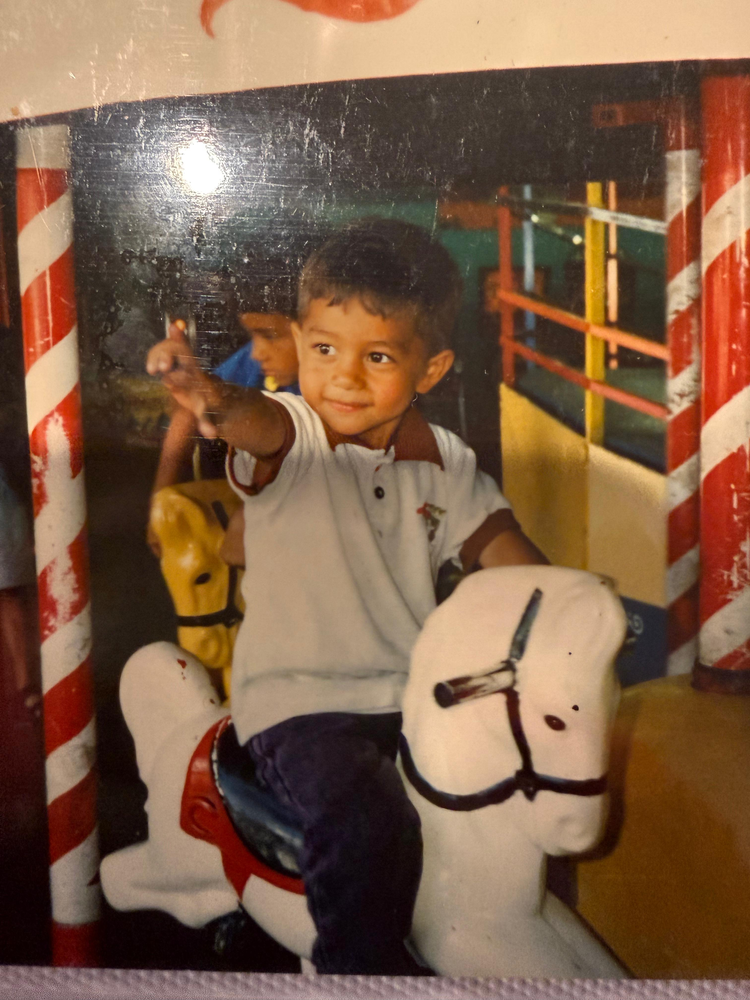
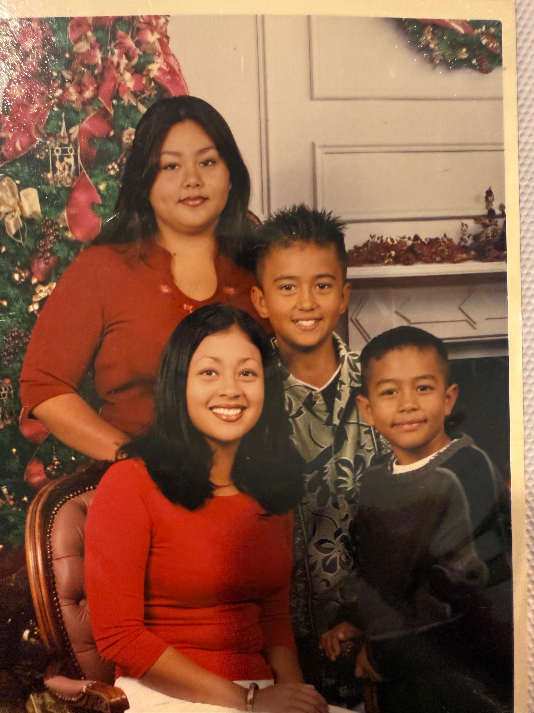
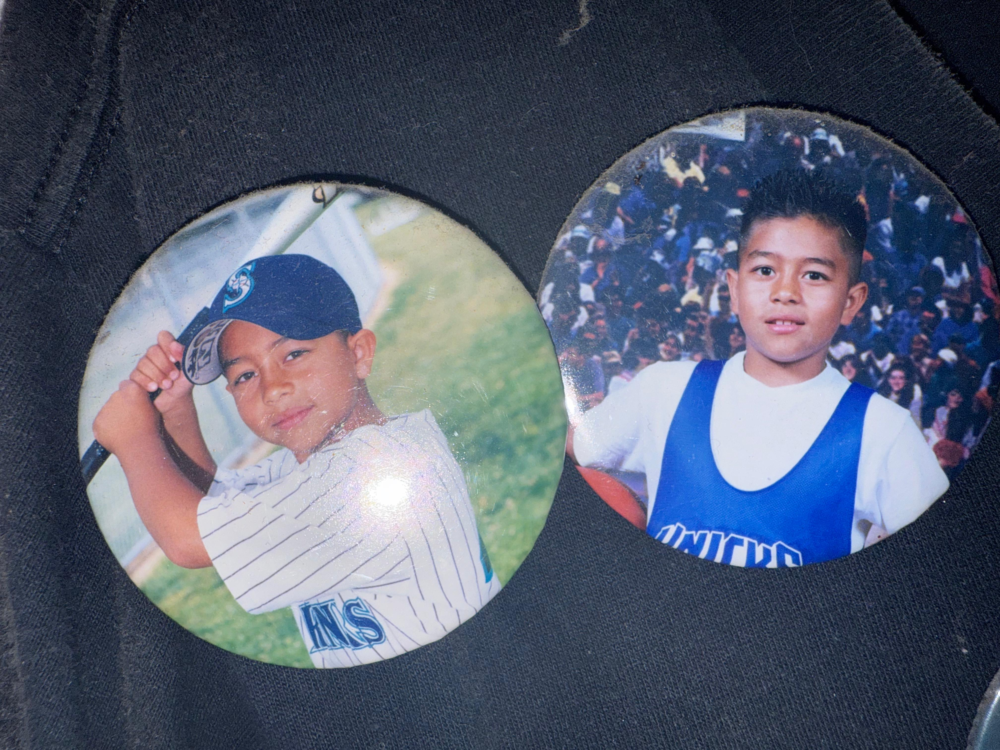
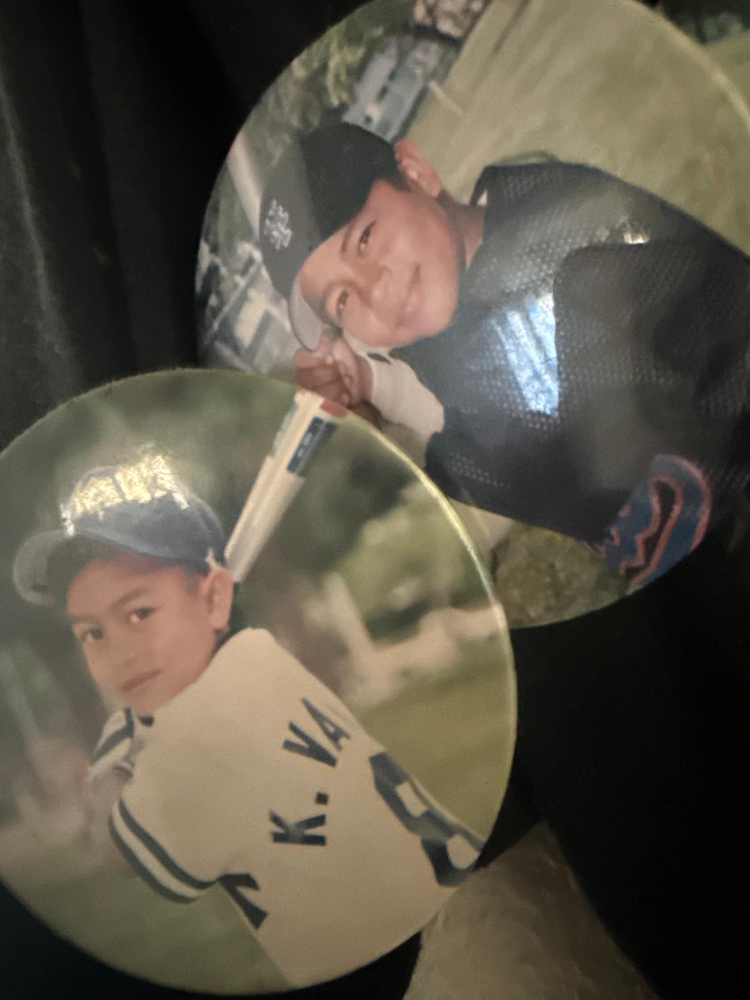
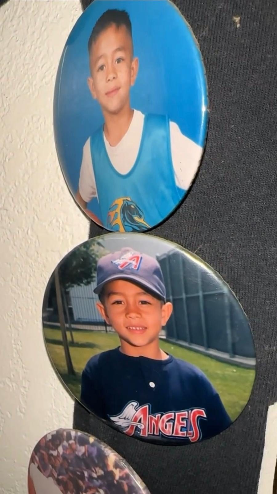
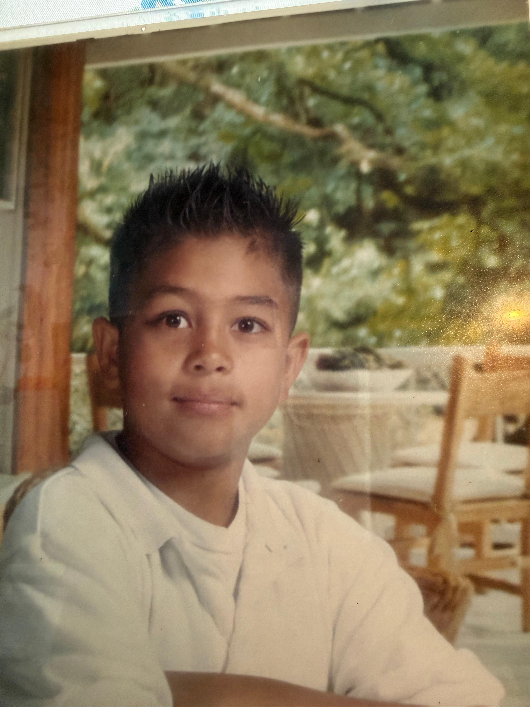
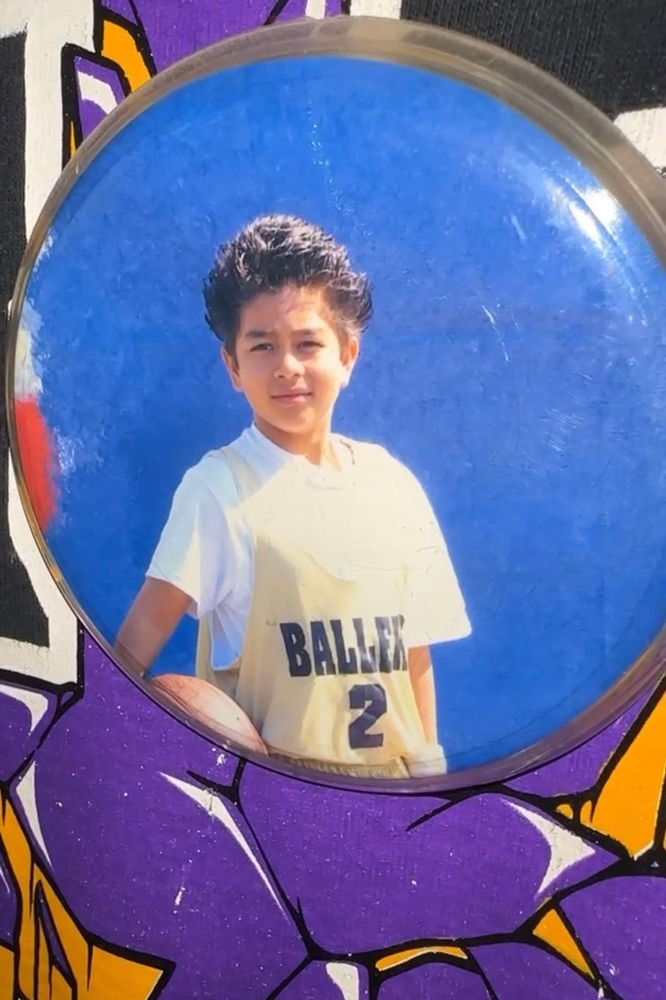

Welcome to this dedicated site celebrating your 34th birthday! Remember the photos you shared with me? Yes, we’re going to start this birthday journey by walking down your memory lane. Please bear with me with the captions and everything, as I’m trying my best haha. Are you ready, my love?

Let’s start with this little baby Kevin 🥹 I think you were 2 in this picture? I could be wrong but you don't even know about that, so we are even haha. Look how smolll you were! You were once this tiny, just knowing how to cry, laugh, and eat! Completely unaware of things like hospital dynamic shifts 😆

Here you are a little older... maybe 4? You better go check with your mom, I am curious here haha jk. Your smile here is so sweet, mi cielo. I hope that no matter how hard or tiring life can be, you always keep this same gentle smile. And seriously… what was that pose? 😂

Ahhh, thank you for sharing this photo with me, my love. Where do I even begin? I really love this picture! not only were you smiling so confidently haha, but I also got to know your siblings through it. Melissa, the one you look up to. Johanna, who shares the same birth month as you and gave you Nash, making you a cool young uncle.. how wonderful is that? And Jaime, who always comes to the rescue, just like you told me. And you? What were you doing around the house, my love? Hahaha, I’m kidding. I’m sure you did a lot. You’re the youngest, and you complete them with your love, kindness, and softness :)



I feel like basketball and baseball were the biggest parts of your childhood. Hearing all your stories about your sports journey made me smile so much the first time and even now, remembering them makes my heart warm. You joined the greatest basketball team back then, right? You were so passionate… and you still are, especially about baseball. I’m truly glad you had such a beautiful childhood, my love💛

Ahh the black eye that you probably got because of baseball. Even if you don’t remember how it happened exactly haha. Anyway, I may not have known you from the start, but from now on, I hope nothing ever hurts those beautiful eyes again. You’re so calm, gentle, and steady but still, take extra care, okay?

Last but not least, this one wins best childhood photo 🏆 I still can’t believe the story behind it! I laugh every time I think about it. You were so serious about making your hair spike that high. ICONIC. GOLD. 😆♥️
Mi amor, Kevin Michael Vanegas,
Gracias por traer tanta alegría a mi vida desde el día en que nos conocimos. Gracias por abrir tu corazón conmigo y por compartir tu vida, incluso estando a miles de kilómetros de distancia. A veces olvido lo lejos que estamos, porque logras que te sienta tan cerca a través de los mensajes que nos enviamos cada día, y de cada foto y video que compartes conmigo.
Gracias por siempre dar lo mejor de ti a las personas que te rodean. Gracias por ser tan amable, tan sincero y tan honesto. Gracias por permitirme conocerte de verdad. Gracias por confiar en mí. Gracias por hacer tiempo para mí, aun con tu agenda tan ocupada, y por seguir enviándome esos mensajes largos que valoro más de lo que imaginas. Gracias por hacerme sonreír todos los días.
Una vez me preguntaste cómo era mi vida antes de ti, y simplemente respondí: “nada especial”. Tal vez era la respuesta más sencilla. Pero si soy honesta, he pasado mucho tiempo trabajando en mí misma, intentando crecer, intentando ser una mejor versión de mí. No siempre fue fácil.. el camino para llegar hasta aquí tuvo sus propios desafíos. Pero hay algo que he comprendido, aunque no siempre lo diga en voz alta: tú y yo vemos la vida de una manera muy parecida. La forma en que piensas, en que entiendes las cosas, en que miras el mundo… se siente tan natural para mí. Hablar contigo es tan fácil, tan ligero, como si estuviera hablando con alguien que simplemente me entiende. Y quizá por eso estar contigo se siente tan correcto… porque, de alguna manera, eres la persona que siempre he estado buscando.
Y lo más importante, espero que disfrutes de verdad el comienzo de tus 34 años hoy. Deseo que tengas una vida larga y saludable, para que puedas viajar por el mundo y vivir todo lo que sueñas, mi amor. Y espero que el próximo año podamos celebrar tu cumpleaños juntos.
Te quiero mucho, de corazón🤍